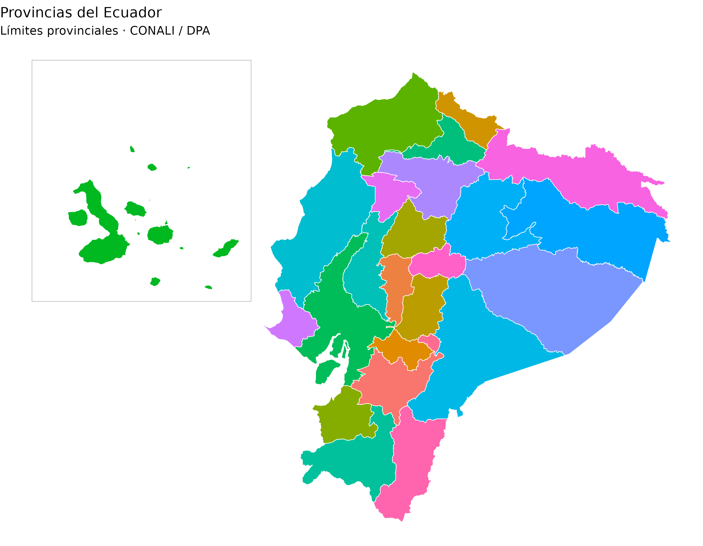
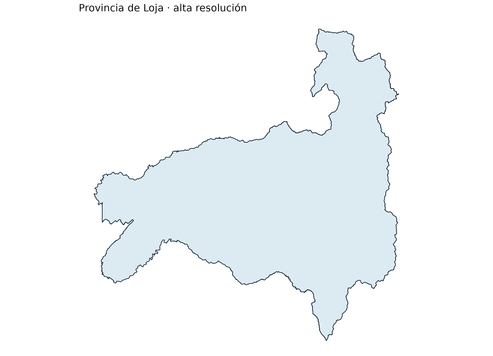
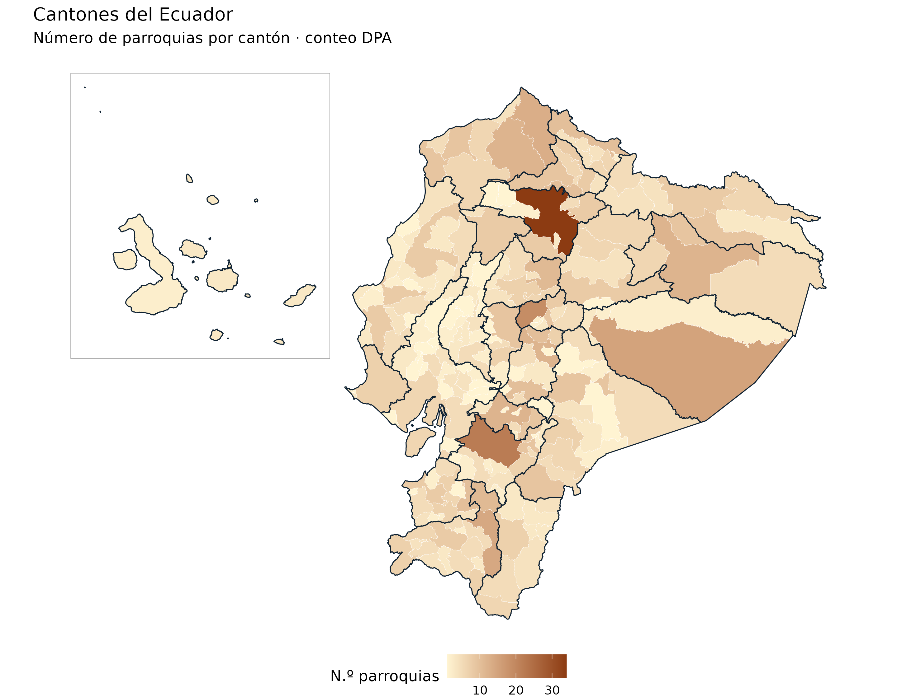
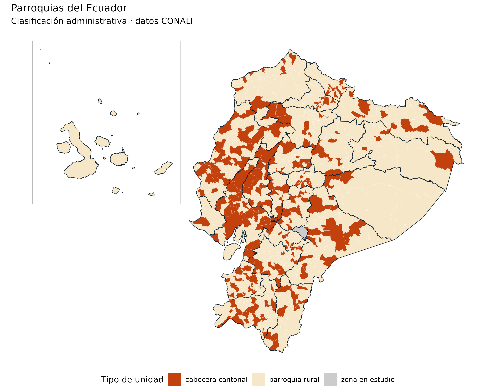
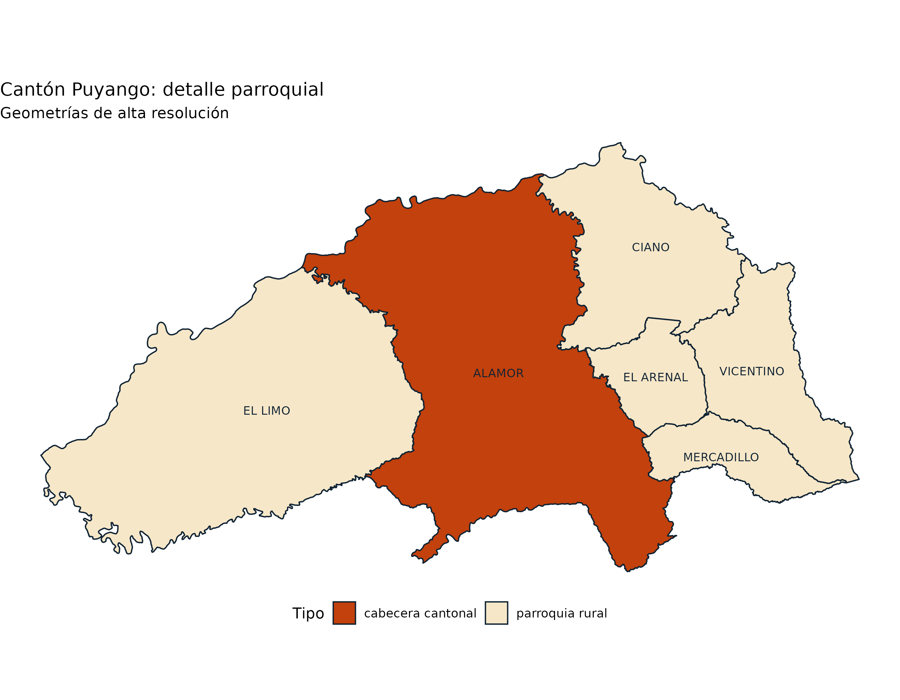
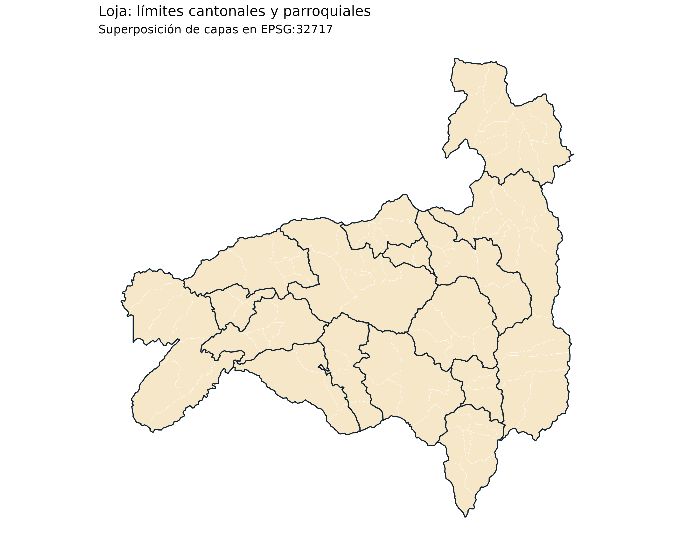

Galería cartográfica: provincias, cantones y parroquias
Source:vignettes/articles/galeria.Rmd
galeria.RmdLa galería muestra mapas generados directamente con las capas de geoecu. Los ejemplos son ejecutables: las geometrías provienen de los GeoPackages publicados con el paquete y se descargan la primera vez que se utilizan. No se emplean territorios ni datos inventados.
1. Provincias: límites y clasificación territorial
La capa provincial incluye 24 provincias más
una zona en estudio. El código DPA provincial se
encuentra en dpa_provin.
prov <- reubicar_galapagos(read_provincias(crs = 32717))
ggplot(prov) +
geom_sf(aes(fill = provincia), color = "white", linewidth = 0.25) +
geom_sf(data = marco_galapagos(prov), fill = NA, color = "grey65") +
guides(fill = "none") +
labs(title = "Provincias del Ecuador",
subtitle = "Límites provinciales · CONALI / DPA") +
theme_void()
Para filtrar una provincia concreta sin reubicar las islas:
loja <- read_provincias(provincia = "Loja", resolucion = "alta")
ggplot(loja) +
geom_sf(fill = "#DCEAF2", color = "#0F2233", linewidth = 0.4) +
labs(title = "Provincia de Loja · alta resolución") +
theme_void()
2. Cantones: mapa temático nacional
223 cantones y dos zonas en estudio. Como indicador real de ejemplo, contamos las parroquias del catálogo DPA para cada cantón; se conservan también las zonas en estudio para la continuidad cartográfica.
conteo <- as.data.frame(table(dpa$dpa_canton), stringsAsFactors = FALSE)
names(conteo) <- c("codigo", "n_parroquias")
conteo$n_parroquias <- as.integer(conteo$n_parroquias)
cant <- geoecu_unir(conteo, codigo = "codigo", nivel = "canton", crs = 32717)
cant <- reubicar_galapagos(cant)
ggplot() +
geom_sf(data = cant, aes(fill = n_parroquias),
color = "white", linewidth = 0.08) +
geom_sf(data = prov, fill = NA, color = "#0F2233", linewidth = 0.35) +
geom_sf(data = marco_galapagos(prov),
fill = NA, color = "grey65") +
scale_fill_gradient(low = "#FFF4D2", high = "#8C3B12",
name = "N.º parroquias") +
labs(title = "Cantones del Ecuador",
subtitle = "Número de parroquias por cantón · conteo DPA") +
theme_void() +
theme(legend.position = "bottom")
Para representar casos epidemiológicos o coberturas
reemplaza conteo por tu tabla agregada a nivel cantonal y
utiliza geoecu_unir(). Los códigos que vienen de Excel se
normalizan automáticamente.
3. Parroquias: cabeceras cantonales y parroquias rurales
1048 unidades parroquiales más tres zonas en
estudio. La columna tipo distingue cabeceras
cantonales, parroquias rurales y zonas en estudio.
parr <- reubicar_galapagos(read_parroquias(crs = 32717))
ggplot() +
geom_sf(data = parr, aes(fill = tipo),
color = "white", linewidth = 0.04) +
geom_sf(data = prov, fill = NA, color = "#0F2233", linewidth = 0.3) +
geom_sf(data = marco_galapagos(prov),
fill = NA, color = "grey65") +
scale_fill_manual(
values = c("cabecera cantonal" = "#C2410C",
"parroquia rural" = "#F6E7C8",
"zona en estudio" = "grey80"),
name = "Tipo de unidad"
) +
labs(title = "Parroquias del Ecuador",
subtitle = "Clasificación administrativa · datos CONALI") +
theme_void() +
theme(legend.position = "bottom")
Detalle ampliado: parroquias de Puyango, Loja
En el acercamiento se usa resolucion = "alta" para
conservar el detalle cartográfico, con nombres y límites
parroquiales.
puyango <- read_parroquias(provincia = "Loja",
canton = "Puyango", resolucion = "alta")
ggplot(puyango) +
geom_sf(aes(fill = tipo), color = "#0F2233", linewidth = 0.45) +
geom_sf_text(aes(label = parroquia), size = 3,
color = "#0F2233", check_overlap = TRUE) +
scale_fill_manual(values = c("cabecera cantonal" = "#C2410C",
"parroquia rural" = "#F6E7C8"),
name = "Tipo") +
labs(title = "Cantón Puyango: detalle parroquial",
subtitle = "Geometrías de alta resolución") +
theme_void() +
theme(legend.position = "bottom")
Las antiguas parroquias urbanas se incluyen en su cabecera cantonal y no aparecen como polígonos separados en la versión 0.4.0.
4. Superposición y sistema de coordenadas
Para superponer niveles en un mismo mapa usa el mismo CRS. El ejemplo siguiente muestra límites cantonales y parroquiales de Loja sin trasladar coordenadas.
loja_c <- read_cantones(provincia = "Loja", crs = 32717)
loja_p <- read_parroquias(provincia = "Loja", crs = 32717)
ggplot() +
geom_sf(data = loja_p, fill = "#F6E7C8",
color = "white", linewidth = 0.13) +
geom_sf(data = loja_c, fill = NA,
color = "#0F2233", linewidth = 0.5) +
labs(title = "Loja: límites cantonales y parroquiales",
subtitle = "Superposición de capas en EPSG:32717") +
theme_void()
El EPSG:4326 se utiliza por defecto para visualización general. Para
análisis de distancias o áreas se requiere elegir un CRS proyectado
adecuado al ámbito de estudio. No calcules medidas sobre
geometrías reubicadas mediante
reubicar_galapagos().
Reproducir las imágenes de la página principal
Para generar las ilustraciones a alta resolución incluidas en el README, usa una copia del repositorio y ejecuta:
# Desde la raíz del repositorio, en la consola de R:
source("data-raw/03_figuras_readme.R")Este script utiliza ggplot2, patchwork y
scales. Las figuras README-provincias.png,
README-cantones.png y README-parroquias.png se
guardan en man/figures/ y son independientes de los
gráficos generados automáticamente en este artículo.
Fuente cartográfica: Organización Territorial del Estado, CONALI, Ministerio de Gobierno del Ecuador, datos abiertos CC BY.